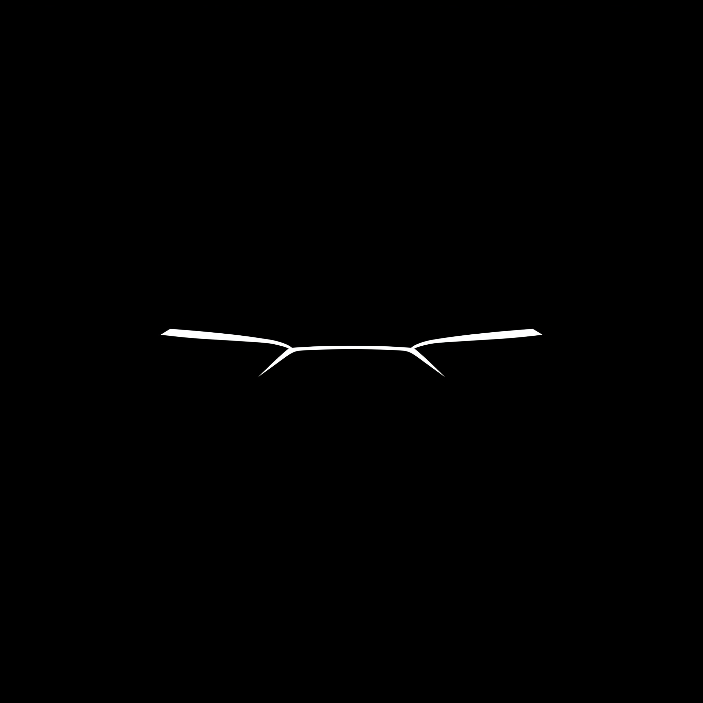

FLAGSHIP PROJECT · BETA
Kerodex↗
A better road to
your next car.
A private-party car marketplace built from the ground up. Fast search, map-first discovery, and trust at the center of the experience.
Data & architecture15+ runtime tables and 23+ indexes supporting listings, conversations, verification, moderation, and audit logs.
Trust & securityAI-assisted vehicle verification with S3 and OpenAI vision, OAuth, role-based access, rate limiting, and session revocation.

PRIVATE-PARTY. REIMAGINED.BETA / IN DEVELOPMENT